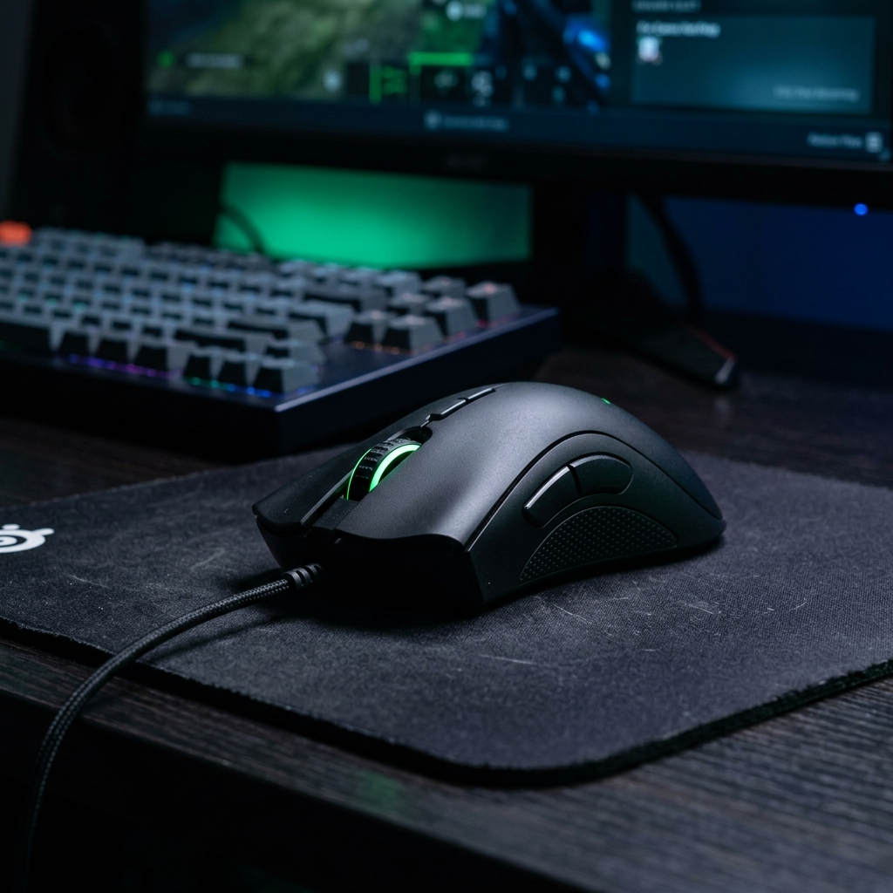
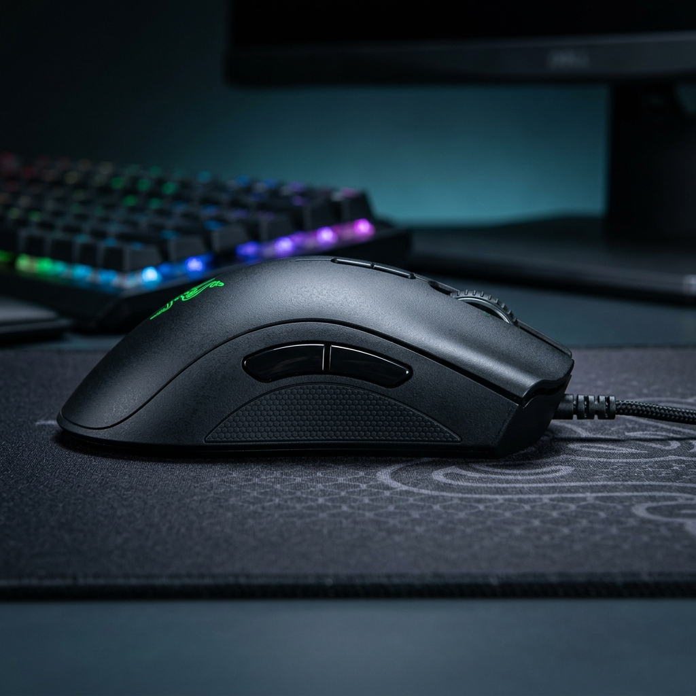

Razer DeathAdder Essential
$29.99$24.99
El rey indiscutible de la ergonomía. El DeathAdder Essential mantiene la forma icónica que ha enamorado a millones de gamers, ofreciendo un rendimiento confiable a un precio de entrada.
- Sensor Óptico: 6,400 DPI reales, perfecto para juegos de precisión y movimientos rápidos.
- Diseño Ergonómico: Forma clásica probada en esports, ideal para agarre de palma.
- Durabilidad: Switches mecánicos Razer con ciclo de vida de 10 millones de clics.
- Botones: 5 botones Hyperesponse programables para macros y atajos.
- Iluminación: Icónico logo Razer con iluminación verde distintiva.
Reseñas Destacadas
"Por el precio que tiene, es el mejor mouse para manos grandes. La ergonomía es perfecta y el cable trenzado es de muy buena calidad."
— Miguel A. ✅ Compra verificada
"Si nunca has tenido un mouse gamer y quieres algo de marca reconocida sin gastar mucho, este es el indicado. Sencillo y efectivo."
— Sofía T. ✅ Compra verificada
🚚 Envío Rápido Amazon
🔒 Pago Seguro
⭐ Garantía Razer